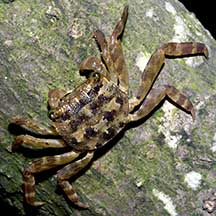
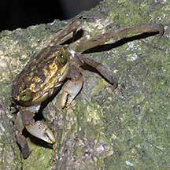
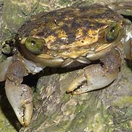
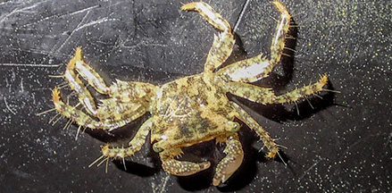
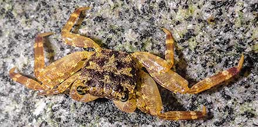

|
|
| crabs text index | photo index |
| Phylum Arthropoda > Subphylum Crustacea > Class Malacostraca > Order Decapoda > Brachyurans > Family Sesarmidae |
| Mangrove
tree-dwelling crab Selatium brockii Family Sesarmidae updated Dec 2019 Where seen? This little green-eyed crab is commonly seen in our mangrove trees. Small ones are also seen on jetty pilings and other hard surfaces encrusted with barnacles and other animals. Features: Body width 2-2.5cm. Body half-circular, flat. Eyes greenish, spaced apart. Walking legs flat, long with pointed tips. Yellow with regular dark brown blotches. During the day, it hides in crevices or under loose bark of mangrove trees. It comes out to forage at night. The crab is able to stay out of the water for some time because it recirculates and oxygenates the water in its gills by pumping this over hairs on its face. This crab can make a sound (stridulate) by rubbing the bumps on the pincers against the uneven face. What does it eat? It eats mainly algae that grows on hard surfaces, scraping this off with its flattened pincers. It also nibbles on young mangrove leaves and small animals found there, such as ants and bivalves. |
 Sungei Buloh Wetland Reserve, Nov 03 |
 Pointed legs to climb and cling. Sungei Buloh Wetland Reserve, Aug 03 |
 Eyes have a greenish tinge. |
| Mangrove tree-dwelling crabs on Singapore shores |
On wildsingapore
flickr
|
| Other sightings on Singapore shores |
 East Coast Park, Aug 20 Photo shared by Vincent Choo on facebook. |
 Big Sisters Island, Dec 20 Photo shared by Vincent Choo on facebook. |
Links
|